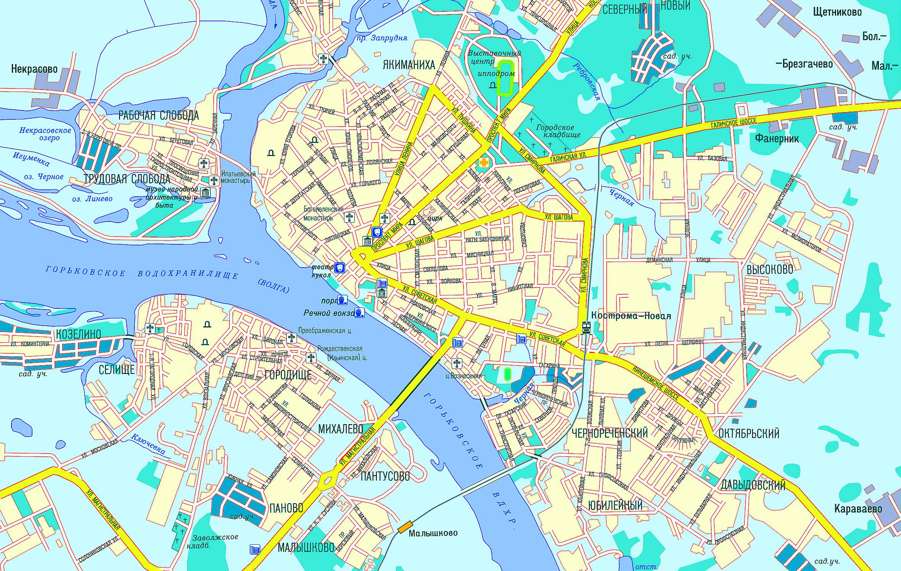
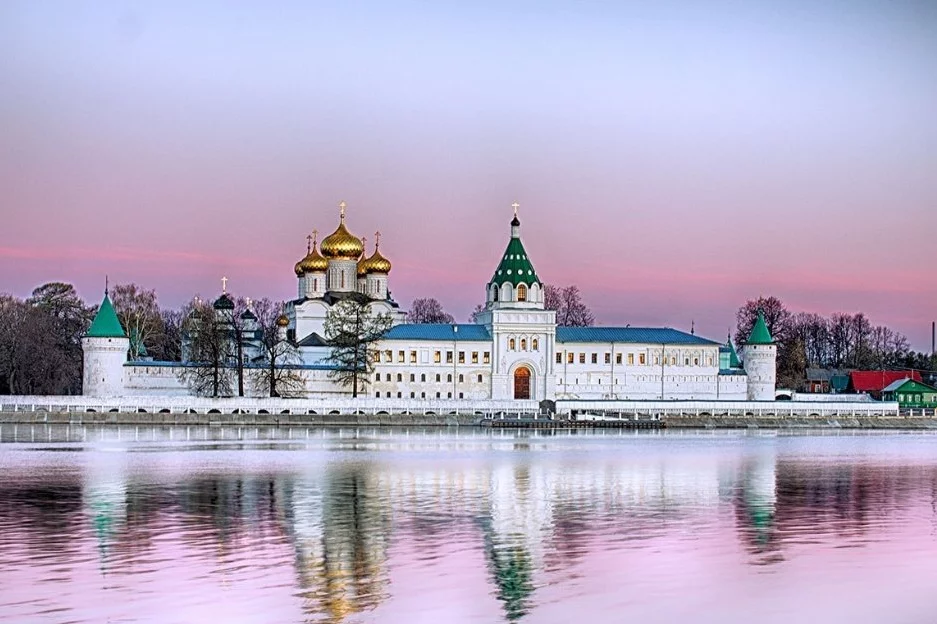
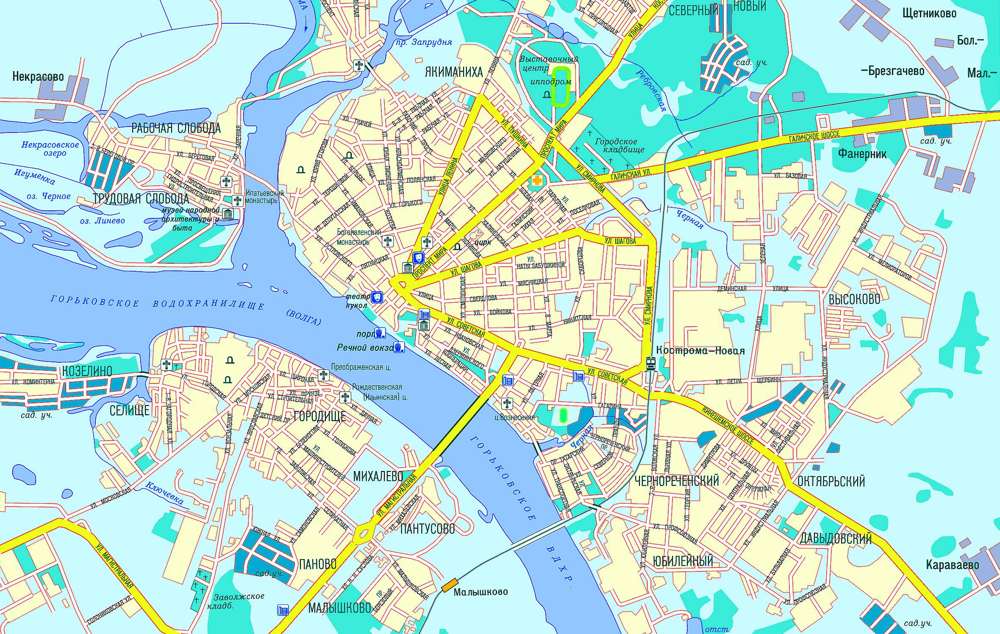
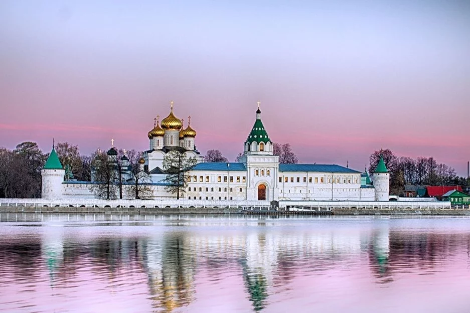

Архитектурное наследие Костромской губернии. Исторический центр Костромы – это уникальный пример гармоничного соединения архитектуры, истории и духа русской провинции, расположенный на живописных берегах Волги, он является символом богатого культурного наследия России, сохранившимся на протяжении веков.
Миссия проекта: Сохранение культурного кода, святынь Отечества, популяризация храмовой архитектуры Костромской губернии. Мы стремимся изучать, документировать, сохранять и делиться знаниями о культурном наследии региона, чтобы вдохновить людей на личное участие в проекте.
Исторический центр Костромы – это уникальный пример гармоничного соединения архитектуры, истории и духа русской провинции, расположенный на живописных берегах Волги, он является символом богатого культурного наследия России, сохранившимся на протяжении веков. Кострома, основанная в 1152 году, сыграла значительную роль в становлении Русского государства. Исторический центр города сформировался в XVIII веке, когда после разрушительного пожара 1773 года была утверждена регулярная планировка. Радиально-кольцевая структура, напоминающая лучи солнца, не только придала городу уникальный облик, но и воплотила в себе стремление к упорядоченности и гармонии, характерное для того времени.
Одним из ключевых элементов центра является Сусанинская площадь, названная в честь Ивана Сусанина – героя, чье имя тесно связано с историей Костромы. От площади расходятся улицы, ведущие к другим значимым памятникам архитектуры: Ипатьевскому монастырю, известному как "колыбель дома Романовых", который является одним из главных символов города. Именно здесь Михаил Романов был избран первым царём новой династии, что определило дальнейшую судьбу страны. Богоявленско-Анастасиин монастырь отражает богатую православную традицию региона.
Источники:
Труды Чухломского Отделения Костромского Научного Общества и Чухломского музея/ Выпуск IV Л.Н.Казаринов «Прошлое Чухломского края»: Чухлома, 2007.
Кострома: Историческая энциклопедия / Гл. ред. А.К. Шустов. – Кострома: ООО «Костромаиздат-850», 2002.
© 2025 Костромская губерния. Все права защищены.